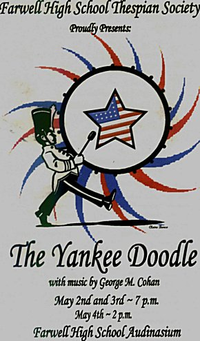
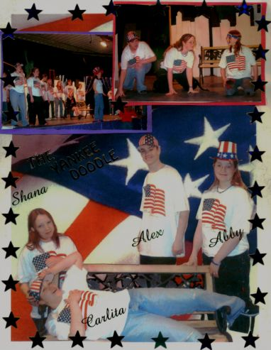

?

Duke...Derik M.

CAST:
Mary(Fri.)...Danielle F.
Mary(Sat.)...Claire B.
Gina...Stefanie M.
Mike...Clayton C.
Tom...Patrick C.
Heather...Shana H.
Carol...Cheryl H.
Audrey...Jenny M.
Miss Phillips...Amber B.
Janet...Corey P.
Arthur...Carlita G.
Cass...Abby W.
Mr. Hurley...Tyler O.
Mrs. Norton(Fri.)...Claire B.
Mrs. Norton(Sat.)...Danielle F.
Proprieter...Abby G.
Waitress...Corey P.
Groupees, Patrons & Chorus:
June...Stefanie M.
Lillian...Carlite G.
Phyllis...Stephanie D.
Patrick C., Tracy M., Cody W., Stephanie D., Lacy B., Angelica L., Raelyn Kay M.
SYNOPSIS:
Background by ShadyLadyGraFix © 2005
All rights reserved.